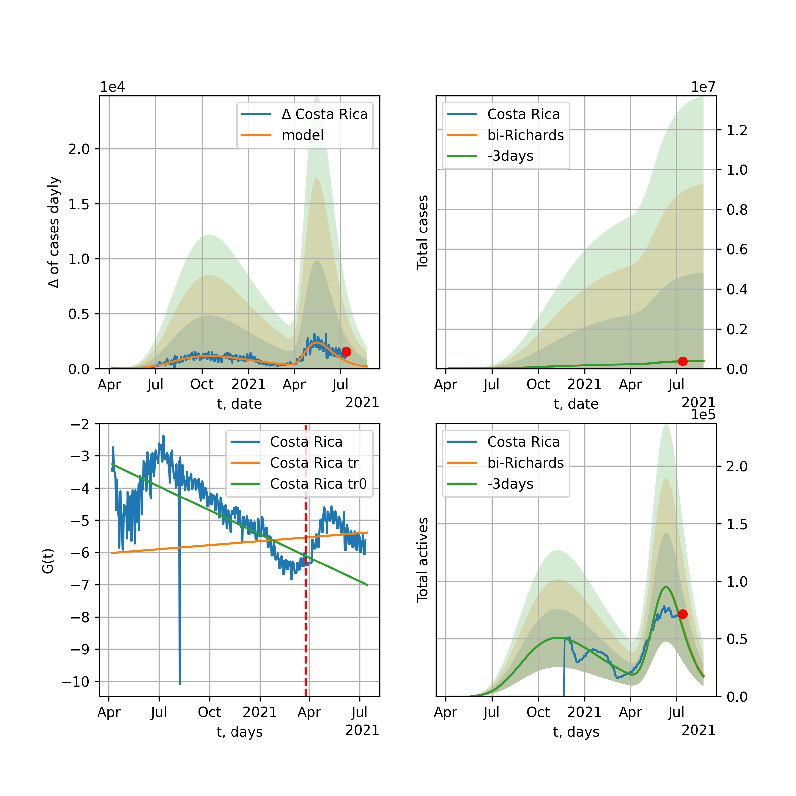
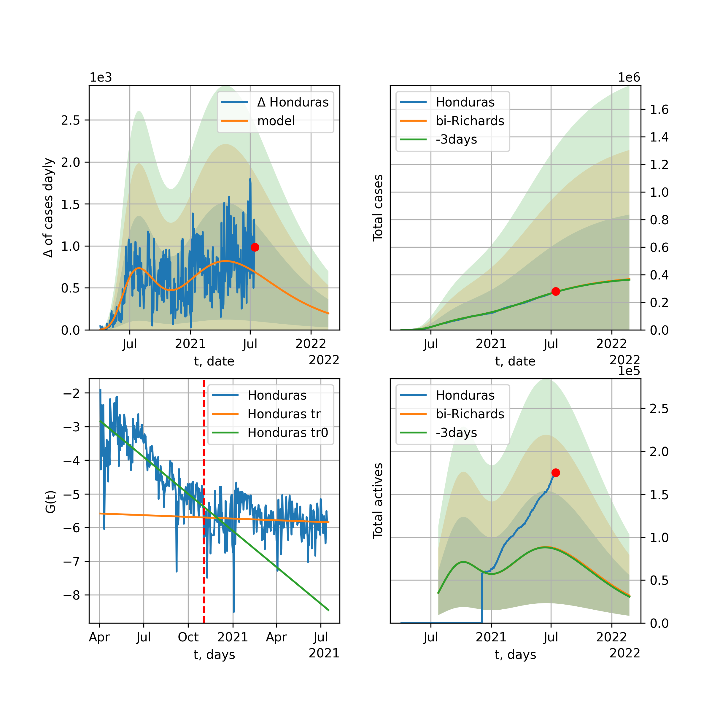
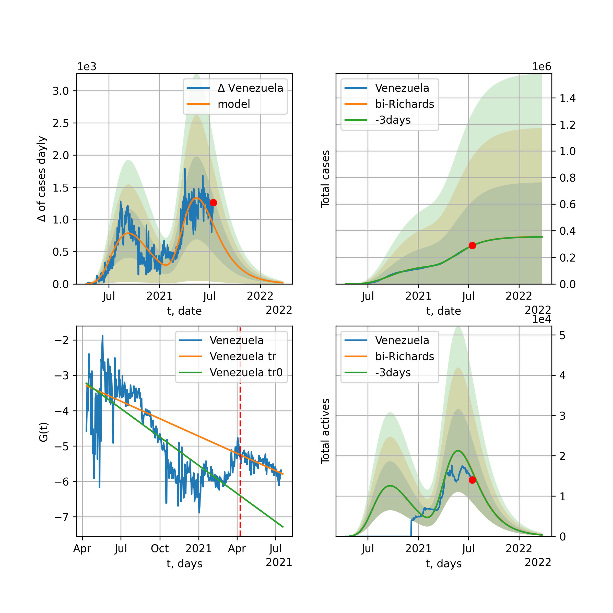

Multi-logistic model of COVID-19 dynamics
Model, code, results
Project maintained by algmaknick Hosted on GitHub Pages — Theme by mattgraham
World

World data at: 2020-12-09
+3 day model MAPE: 0.002755
model: bi-Richards
coeffs: [2.45845700e+07 2.15621697e+00 1.33282559e+02 1.67907699e-02]
rational stdev: 0.171206
forecast at the end of period: +644 days
deltaDaycases: 2650
total cases: 124836211 ± 21372713
total death: 2840858 ± 1459116
bi-Richards approximation splitting point: 200
actives k: 33
trend coefficient of determination: 0.810492
intercept: -3.073533
slope: -0.010972
trend coefficient of determination: 0.004245
intercept: -5.028188
slope: 0.000487
European Union

European Union data at: 2020-12-09
+3 day model MAPE: 0.012243
model: bi-Richards
coeffs: [1.16533255e+07 4.37103150e-02 2.56057619e+02 2.16119239e+00]
rational stdev: 0.233652
forecast at the end of period: +59 days
deltaDaycases: 283
total cases: 13121488 ± 3065867
total death: 309296 ± 216803
bi-Richards approximation splitting point: 200
actives k: 26
trend coefficient of determination: 0.534402
intercept: -28.068455
slope: -0.055447
trend coefficient of determination: 0.913398
intercept: -24.535296
slope: -0.054065
Brazil

Brazil data at: 2020-12-09
+3 day model MAPE: 0.001790
model: bi-Richards
coeffs: [2.11195548e+06 1.61792157e+00 1.94739670e+02 2.57816269e-02]
rational stdev: 0.263786
forecast at the end of period: +234 days
deltaDaycases: 159
total cases: 8667404 ± 2286343
total death: 230566 ± 182460
bi-Richards approximation splitting point: 220
actives k: 17
trend coefficient of determination: 0.544120
intercept: -2.158214
slope: -0.015534
trend coefficient of determination: 0.094518
intercept: -7.862129
slope: 0.007877
Russia

Russia data at: 2020-12-09
+3 day model MAPE: 0.003326
model: bi-Richards
coeffs: [4.01766668e+06 8.34784154e-01 2.32853976e+01 2.09596577e-02]
rational stdev: 0.172189
forecast at the end of period: +304 days
deltaDaycases: 365
total cases: 5130611 ± 883436
total death: 90284 ± 46637
bi-Richards approximation splitting point: 200
actives k: 26
trend coefficient of determination: 0.730675
intercept: -2.948983
slope: -0.015742
trend coefficient of determination: 0.004131
intercept: -4.860399
slope: 0.000365
USA

USA data at: 2020-12-09
+3 day model MAPE: 0.008857
model: bi-Richards
coeffs: [9.74644777e+06 2.73044553e+00 1.52916970e+02 1.49976500e-02]
rational stdev: 0.250749
forecast at the end of period: +647 days
deltaDaycases: 239
total cases: 26265951 ± 6586150
total death: 492563 ± 370528
bi-Richards approximation splitting point: 150
actives k: 52
trend coefficient of determination: 0.643231
intercept: -2.427880
slope: -0.018732
trend coefficient of determination: 0.421022
intercept: -6.394706
slope: 0.006574
Spain

Spain data at: 2020-12-09
+3 day model MAPE: 0.011056
model: bi-Richards
coeffs: [1.76400076e+06 4.10645743e-02 2.29472405e+02 8.72346946e-01]
rational stdev: 0.136280
forecast at the end of period: +94 days
deltaDaycases: 411
total cases: 2030759 ± 276752
total death: 55338 ± 22624
bi-Richards approximation splitting point: 170
actives k: 35
trend coefficient of determination: 0.449332
intercept: -12.471912
slope: -0.035108
trend coefficient of determination: 0.623943
intercept: -11.849197
slope: -0.020514
Italy

Italy data at: 2020-12-09
+3 day model MAPE: 0.010246
model: bi-Richards
coeffs: [1.61200565e+06 7.14152112e-02 2.60138858e+02 1.43462392e+00]
rational stdev: 0.155894
forecast at the end of period: +59 days
deltaDaycases: 30
total cases: 1861540 ± 290202
total death: 64926 ± 30364
bi-Richards approximation splitting point: 200
actives k: 28
trend coefficient of determination: 0.588863
intercept: -17.233076
slope: -0.048436
trend coefficient of determination: 0.320546
intercept: -18.429719
slope: -0.019972
United Kingdom

United Kingdom data at: 2020-12-09
+3 day model MAPE: 0.002549
model: bi-Richards
coeffs: [1.70434420e+06 9.14367075e-02 2.17535532e+02 5.22135516e-01]
rational stdev: 0.199925
forecast at the end of period: +164 days
deltaDaycases: 5
total cases: 2027637 ± 405375
total death: 71801 ± 43064
bi-Richards approximation splitting point: 200
actives k: 35
trend coefficient of determination: 0.627534
intercept: -7.837437
slope: -0.029286
trend coefficient of determination: 0.758983
intercept: -5.453815
slope: -0.024500
France

France data at: 2020-12-09
+3 day model MAPE: 0.008984
model: bi-Richards
coeffs: [2.13080942e+06 3.61110455e-02 2.51824665e+02 4.71705956e+00]
rational stdev: 0.092555
forecast at the end of period: +129 days
deltaDaycases: 0
total cases: 2273350 ± 210409
total death: 55408 ± 15384
bi-Richards approximation splitting point: 95
actives k: 105
trend coefficient of determination: 0.779454
intercept: -37.568546
slope: -0.341620
trend coefficient of determination: 0.832621
intercept: -52.481451
slope: -0.071176
Germany

Germany data at: 2020-12-09
+3 day model MAPE: 0.017859
model: bi-Richards
coeffs: [1.19930926e+06 5.58129631e-02 2.52194173e+02 1.33773114e+00]
rational stdev: 0.200696
forecast at the end of period: +38 days
deltaDaycases: 1127
total cases: 1409527 ± 282887
total death: 23491 ± 14143
bi-Richards approximation splitting point: 210
actives k: 17
trend coefficient of determination: 0.435637
intercept: -17.896704
slope: -0.028585
trend coefficient of determination: 0.659195
intercept: -14.751142
slope: -0.028868
Turkey

Turkey data at: 2020-12-09
+3 day model MAPE: 0.003547
model: bi-Richards
coeffs: [ 7.21373998e+06 4.22099681e-01 -5.25416219e+01 2.02343621e-02]
rational stdev: 0.222773
forecast at the end of period: +724 days
deltaDaycases: 448
total cases: 7491562 ± 1668915
total death: 125738 ± 84032
bi-Richards approximation splitting point: 210
actives k: 17
trend coefficient of determination: 0.588819
intercept: -3.317091
slope: -0.014792
trend coefficient of determination: 0.807896
intercept: -9.983651
slope: 0.020870
Iran

Iran data at: 2020-12-09
+3 day model MAPE: 0.010185
model: bi-Richards
coeffs: [8.58357087e+05 5.86741389e-02 2.75173350e+02 9.94716944e-01]
rational stdev: 0.252705
forecast at the end of period: +388 days
deltaDaycases: 13
total cases: 1464678 ± 370130
total death: 69930 ± 53014
bi-Richards approximation splitting point: 200
actives k: 17
trend coefficient of determination: 0.689113
intercept: -10.719509
slope: -0.044643
trend coefficient of determination: 0.003824
intercept: -17.698044
slope: -0.000493
Canada

Canada data at: 2020-12-09
+3 day model MAPE: 0.003249
model: bi-Richards
coeffs: [2.54253704e+06 3.45281729e-01 1.36987124e+01 3.02189334e-02]
rational stdev: 0.239619
forecast at the end of period: +430 days
deltaDaycases: 634
total cases: 2602968 ± 623720
total death: 77629 ± 55804
bi-Richards approximation splitting point: 200
actives k: 17
trend coefficient of determination: 0.775392
intercept: -2.340489
slope: -0.024076
trend coefficient of determination: 0.417761
intercept: -6.533204
slope: 0.007536
South Africa

South Africa data at: 2020-12-09
+3 day model MAPE: 0.008127
model: bi-Richards
coeffs: [ 3.86257054e+05 1.65429616e+00 -5.94364394e+00 1.03046342e-02]
rational stdev: 0.284646
forecast at the end of period: +164 days
deltaDaycases: 332
total cases: 1016898 ± 289455
total death: 27703 ± 23656
bi-Richards approximation splitting point: 200
actives k: 17
trend coefficient of determination: 0.703136
intercept: -1.707229
slope: -0.019585
trend coefficient of determination: 0.389903
intercept: -8.657143
slope: 0.010769
Belgium

Belgium data at: 2020-12-09
+3 day model MAPE: 0.008102
model: bi-Richards
coeffs: [5.11805411e+05 6.63598935e-02 2.34420198e+02 2.42034651e+00]
rational stdev: 0.176261
forecast at the end of period: +59 days
deltaDaycases: 0
total cases: 577755 ± 101835
total death: 17017 ± 8998
bi-Richards approximation splitting point: 170
actives k: 61
trend coefficient of determination: 0.570181
intercept: -23.654425
slope: -0.073587
trend coefficient of determination: 0.767608
intercept: -20.537626
slope: -0.061398
Peru

Peru data at: 2020-12-09
+3 day model MAPE: 0.002229
model: bi-Richards
coeffs: [ 6.12231300e+05 4.85961488e+00 -7.59838188e-01 6.40429168e-03]
rational stdev: 0.242716
forecast at the end of period: +24 days
deltaDaycases: 319
total cases: 970533 ± 235564
total death: 36202 ± 26360
bi-Richards approximation splitting point: 110
actives k: 21
trend coefficient of determination: 0.797543
intercept: -1.436642
slope: -0.026423
trend coefficient of determination: 0.823320
intercept: -2.247469
slope: -0.015536
Netherlands

Netherlands data at: 2020-12-09
+3 day model MAPE: 0.017831
model: bi-Richards
coeffs: [5.44556728e+05 1.09321314e-01 2.10617556e+02 4.75432747e-01]
rational stdev: 0.220907
forecast at the end of period: +94 days
deltaDaycases: 24
total cases: 610164 ± 134789
total death: 10407 ± 6896
bi-Richards approximation splitting point: 200
actives k: 35
trend coefficient of determination: 0.294825
intercept: -7.846669
slope: -0.018849
trend coefficient of determination: 0.881574
intercept: -2.315008
slope: -0.032078
India

India data at: 2020-12-09
+3 day model MAPE: 0.002445
model: bi-Richards
coeffs: [6.72554624e+06 1.88170604e-01 1.09193859e+02 1.44556201e-01]
rational stdev: 0.216960
forecast at the end of period: +304 days
deltaDaycases: 112
total cases: 10920633 ± 2369338
total death: 158511 ± 103171
bi-Richards approximation splitting point: 92
actives k: 13
trend coefficient of determination: 0.812583
intercept: -2.602457
slope: -0.029168
trend coefficient of determination: 0.960385
intercept: -3.184006
slope: -0.017405
Switzerland

Switzerland data at: 2020-12-09
+3 day model MAPE: 0.020854
model: bi-Richards
coeffs: [3.28883365e+05 8.42351007e-02 2.38336738e+02 1.10261163e+00]
rational stdev: 0.193687
forecast at the end of period: +24 days
deltaDaycases: 163
total cases: 363440 ± 70393
total death: 5706 ± 3315
bi-Richards approximation splitting point: 205
actives k: 17
trend coefficient of determination: 0.260843
intercept: -14.303555
slope: -0.021047
trend coefficient of determination: 0.649184
intercept: -7.085843
slope: -0.041283
Ecuador

Ecuador data at: 2020-12-09
+3 day model MAPE: 0.001814
model: bi-Richards
coeffs: [ 1.79081918e+05 1.39344185e+00 -1.03995592e+02 1.13342534e-02]
rational stdev: 0.078374
forecast at the end of period: +164 days
deltaDaycases: 62
total cases: 240006 ± 18810
total death: 16641 ± 3912
bi-Richards approximation splitting point: 80
actives k: 26
trend coefficient of determination: 0.274237
intercept: -2.231617
slope: -0.047378
trend coefficient of determination: 0.058917
intercept: -4.350524
slope: -0.004735
Portugal

Portugal data at: 2020-12-09
+3 day model MAPE: 0.002931
model: bi-Richards
coeffs: [2.84136780e+05 2.09497790e-01 2.16823804e+02 2.75361414e-01]
rational stdev: 0.242232
forecast at the end of period: +374 days
deltaDaycases: 103
total cases: 484163 ± 117279
total death: 7569 ± 5500
bi-Richards approximation splitting point: 233
actives k: 21
trend coefficient of determination: 0.326493
intercept: -5.919845
slope: -0.011661
trend coefficient of determination: 0.642337
intercept: 1.433315
slope: -0.034780
Saudi Arabia

Saudi Arabia data at: 2020-12-09
+3 day model MAPE: 0.000205
model: bi-Richards
coeffs: [3.12630795e+04 2.09039192e+00 5.03720204e+01 1.23411180e-02]
rational stdev: 0.220405
forecast at the end of period: +24 days
deltaDaycases: 137
total cases: 363733 ± 80168
total death: 6076 ± 4017
bi-Richards approximation splitting point: 200
actives k: 17
trend coefficient of determination: 0.971111
intercept: -1.794346
slope: -0.024563
trend coefficient of determination: 0.681992
intercept: -4.231337
slope: -0.012244
Sweden

Sweden data at: 2020-12-09
+3 day model MAPE: 0.011931
model: bi-Richards
coeffs: [3.05668132e+05 7.41324375e-02 2.65354305e+02 8.96751045e-01]
rational stdev: 0.255207
forecast at the end of period: +59 days
deltaDaycases: 172
total cases: 390953 ± 99774
total death: 9358 ± 7164
bi-Richards approximation splitting point: 200
actives k: 35
trend coefficient of determination: 0.821945
intercept: -7.880078
slope: -0.051744
trend coefficient of determination: 0.365180
intercept: -18.228722
slope: 0.012794
Pakistan

Pakistan data at: 2020-12-09
+3 day model MAPE: 0.000048
model: bi-Richards
coeffs: [1.70771585e+07 9.35240577e-02 1.58328868e+02 7.44158624e-02]
rational stdev: 0.263636
forecast at the end of period: +1060 days
deltaDaycases: 434
total cases: 17311248 ± 4563863
total death: 346926 ± 274386
bi-Richards approximation splitting point: 200
actives k: 26
trend coefficient of determination: 0.882778
intercept: -1.857128
slope: -0.028968
trend coefficient of determination: 0.806680
intercept: -11.760643
slope: 0.021157
Ireland

Ireland data at: 2020-12-09
+3 day model MAPE: 0.005572
model: bi-Richards
coeffs: [4.60152239e+04 1.23859033e-01 2.07428173e+02 5.37161461e-01]
rational stdev: 0.189834
forecast at the end of period: +24 days
deltaDaycases: 19
total cases: 74744 ± 14189
total death: 2097 ± 1194
bi-Richards approximation splitting point: 210
actives k: 35
trend coefficient of determination: 0.371932
intercept: -7.643710
slope: -0.026447
trend coefficient of determination: 0.833453
intercept: -1.544610
slope: -0.037854
Mexico

Mexico data at: 2020-12-09
+3 day model MAPE: 0.009003
model: bi-Richards
coeffs: [1.92104036e+06 8.49919926e-01 4.91332668e-01 1.55042096e-02]
rational stdev: 0.246722
forecast at the end of period: +234 days
deltaDaycases: 2042
total cases: 2720755 ± 671270
total death: 252056 ± 186563
bi-Richards approximation splitting point: 200
actives k: 17
trend coefficient of determination: 0.945769
intercept: -1.753583
slope: -0.018772
trend coefficient of determination: 0.007901
intercept: -5.619188
slope: 0.001475
Singapore

Singapore data at: 2020-12-09
+3 day model MAPE: 0.000336
model: bi-Richards
coeffs: [3.96150419e+04 1.30543959e-01 7.32407167e+01 2.24348067e-01]
rational stdev: 0.322531
forecast at the end of period: +24 days
deltaDaycases: 2
total cases: 58767 ± 18954
total death: 29 ± 28
bi-Richards approximation splitting point: 80
actives k: 26
trend coefficient of determination: 0.179059
intercept: -3.198180
slope: -0.019488
trend coefficient of determination: 0.864512
intercept: -2.392253
slope: -0.032180
Chile

Chile data at: 2020-12-09
+3 day model MAPE: 0.002969
model: bi-Richards
coeffs: [2.05440162e+05 2.06633182e+00 7.39612618e+00 1.09841136e-02]
S.Korea scenario coeffs: [0.36242246, 2.56241634, 1.84890887, 0.13324732]
rational stdev: 0.653157
forecast at the end of period: +94 days
deltaDaycases: 119
total cases: 592824 ± 387207
total death: 16469 ± 32270
bi-Richards approximation splitting point: 170
actives k: 10
trend coefficient of determination: 0.913190
intercept: -1.428061
slope: -0.025388
trend coefficient of determination: 0.512671
intercept: -4.507029
slope: -0.006182
Israel

Israel data at: 2020-12-09
+3 day model MAPE: 0.115279
model: bi-Richards
coeffs: [1.18720937e+05 1.41647427e+00 1.16883175e+02 1.88397355e-02]
rational stdev: 0.385599
forecast at the end of period: +73 days
deltaDaycases: 420
total cases: 409426 ± 157874
total death: 3422 ± 3958
bi-Richards approximation splitting point: 229
actives k: 11
trend coefficient of determination: 0.045272
intercept: -3.960899
slope: -0.004317
trend coefficient of determination: 0.378501
intercept: -12.934402
slope: 0.026755
Austria

Austria data at: 2020-12-09
+3 day model MAPE: 0.009386
model: bi-Richards
coeffs: [2.59634902e+05 7.44190148e-02 2.46254919e+02 1.69377102e+00]
rational stdev: 0.245208
forecast at the end of period: +584 days
deltaDaycases: 3
total cases: 1038663 ± 254688
total death: 13545 ± 9964
bi-Richards approximation splitting point: 210
actives k: 13
trend coefficient of determination: 0.287290
intercept: -18.826044
slope: -0.023274
trend coefficient of determination: 0.858694
intercept: -7.945393
slope: -0.065383
Belarus

Belarus data at: 2020-12-09
+3 day model MAPE: 0.002741
model: bi-Richards
coeffs: [4.50605311e+05 4.74727355e-01 1.97492751e+01 2.80456192e-02]
rational stdev: 0.092218
forecast at the end of period: +374 days
deltaDaycases: 72
total cases: 517571 ± 47729
total death: 4175 ± 1155
bi-Richards approximation splitting point: 200
actives k: 21
trend coefficient of determination: 0.690750
intercept: -2.844172
slope: -0.021881
trend coefficient of determination: 0.780849
intercept: -6.928524
slope: 0.009003
Japan

Japan data at: 2020-12-09
+3 day model MAPE: 0.038756
model: bi-Richards
coeffs: [ 1.21448300e+05 2.01514763e+00 -2.59736188e+02 6.14301983e-03]
rational stdev: 0.128756
forecast at the end of period: +416 days
deltaDaycases: 4
total cases: 444156 ± 57187
total death: 6481 ± 2503
bi-Richards approximation splitting point: 190
actives k: 11
trend coefficient of determination: 0.045621
intercept: -5.267823
slope: 0.003221
trend coefficient of determination: 0.069071
intercept: -5.631981
slope: 0.006139
China

China data at: 2020-12-09
+3 day model MAPE: 0.000201
model: bi-Richards
coeffs: [ 5.61139694e+03 2.32731087e+00 -2.92602793e+02 4.99167240e-03]
rational stdev: 0.068699
forecast at the end of period: +24 days
deltaDaycases: 7
total cases: 86691 ± 5955
total death: 4635 ± 955
bi-Richards approximation splitting point: 110
actives k: 17
trend coefficient of determination: 0.820991
intercept: -2.003287
slope: -0.082721
trend coefficient of determination: 0.106582
intercept: -10.071320
slope: 0.005367
Qatar

Qatar data at: 2020-12-09
+3 day model MAPE: 0.000758
model: bi-Richards
coeffs: [ 3.59138774e+04 1.78224719e+00 -6.69010455e+01 1.02877347e-02]
S.Korea scenario coeffs: [0.36242246, 2.56241634, 1.84890887, 0.13324732]
rational stdev: 0.079855
forecast at the end of period: +24 days
deltaDaycases: 103
total cases: 142846 ± 11407
total death: 244 ± 58
bi-Richards approximation splitting point: 144
actives k: 17
trend coefficient of determination: 0.918226
intercept: -1.939266
slope: -0.030848
trend coefficient of determination: 0.310857
intercept: -5.634287
slope: -0.004414
Poland

Poland data at: 2020-12-09
+3 day model MAPE: 0.000301
model: bi-Richards
coeffs: [1.11169565e+06 9.64536082e-02 2.41262010e+02 8.36067513e-01]
rational stdev: 0.271136
forecast at the end of period: +94 days
deltaDaycases: 35
total cases: 1193543 ± 323611
total death: 23205 ± 18875
bi-Richards approximation splitting point: 170
actives k: 21
trend coefficient of determination: 0.722236
intercept: -7.433465
slope: -0.047620
trend coefficient of determination: 0.325098
intercept: -10.313774
slope: -0.017306
UAE

UAE data at: 2020-12-09
+3 day model MAPE: 0.004833
model: bi-Richards
coeffs: [1.65855455e+05 4.44701482e-02 1.95115353e+02 6.27604573e-01]
rational stdev: 0.102803
forecast at the end of period: +164 days
deltaDaycases: 16
total cases: 222227 ± 22845
total death: 737 ± 227
bi-Richards approximation splitting point: 128
actives k: 11
trend coefficient of determination: 0.920527
intercept: -7.022670
slope: -0.047336
trend coefficient of determination: 0.015284
intercept: -11.844195
slope: -0.001418
Romania

Romania data at: 2020-12-09
+3 day model MAPE: 0.000219
model: bi-Richards
coeffs: [5.03279171e+05 1.62031921e-01 2.24416059e+02 3.13211347e-01]
rational stdev: 0.304337
forecast at the end of period: +227 days
deltaDaycases: 0
total cases: 656487 ± 199793
total death: 15819 ± 14442
bi-Richards approximation splitting point: 220
actives k: 17
trend coefficient of determination: 0.585448
intercept: -4.890088
slope: -0.017913
trend coefficient of determination: 0.441786
intercept: -3.576089
slope: -0.017378
Panama

Panama data at: 2020-12-09
+3 day model MAPE: 0.005339
model: bi-Richards
coeffs: [5.64774182e+05 6.42471939e-01 6.06221905e+01 2.22161798e-02]
rational stdev: 0.244715
forecast at the end of period: +276 days
deltaDaycases: 361
total cases: 669197 ± 163762
total death: 11937 ± 8763
bi-Richards approximation splitting point: 215
actives k: 26
trend coefficient of determination: 0.767742
intercept: -2.372334
slope: -0.015514
trend coefficient of determination: 0.634221
intercept: -9.073641
slope: 0.015585
Ukraine

Ukraine data at: 2020-12-09
+3 day model MAPE: 0.015652
model: bi-Richards
coeffs: [9.99097294e+05 5.94808734e-02 2.45215704e+02 6.49880261e-01]
rational stdev: 0.280692
forecast at the end of period: +794 days
deltaDaycases: 120
total cases: 2471656 ± 693774
total death: 41649 ± 35071
bi-Richards approximation splitting point: 180
actives k: 35
trend coefficient of determination: 0.723803
intercept: -6.668680
slope: -0.035657
trend coefficient of determination: 0.802015
intercept: -9.309066
slope: -0.013195
Indonesia

Indonesia data at: 2020-12-09
+3 day model MAPE: 0.005984
model: bi-Richards
coeffs: [ 1.15038162e+06 4.42644410e-01 -1.30587595e+02 2.31655372e-02]
rational stdev: 0.111327
forecast at the end of period: +472 days
deltaDaycases: 72
total cases: 1190445 ± 132528
total death: 36484 ± 12184
bi-Richards approximation splitting point: 75
actives k: 17
trend coefficient of determination: 0.801085
intercept: -2.033515
slope: -0.029265
trend coefficient of determination: 0.487000
intercept: -3.358719
slope: -0.006844
Bangladesh

Bangladesh data at: 2020-12-09
+3 day model MAPE: 0.172558
model: bi-Richards
coeffs: [ 1.41907990e+04 -2.11483264e-02 -2.21042997e+01 5.03274151e-03]
rational stdev: 0.198123
forecast at the end of period: +402 days
deltaDaycases: 0
total cases: 415197 ± 82260
total death: 5943 ± 3532
bi-Richards approximation splitting point: 210
actives k: 35
trend coefficient of determination: 0.435180
intercept: -2.255775
slope: -0.015389
trend coefficient of determination: 0.192027
intercept: -7.038962
slope: 0.005924
South_Korea

South Korea data at: 2020-12-09
+3 day model MAPE: 0.034741
model: bi-Richards
coeffs: [ 5.23365778e+04 1.01717873e+00 -2.34941921e+02 9.21191020e-03]
rational stdev: 0.164922
forecast at the end of period: +164 days
deltaDaycases: 70
total cases: 55594 ± 9168
total death: 781 ± 386
bi-Richards approximation splitting point: 140
actives k: 26
trend coefficient of determination: 0.397443
intercept: -3.378904
slope: -0.026952
trend coefficient of determination: 0.119243
intercept: -6.506869
slope: 0.005455
Moldova

Moldova data at: 2020-12-09
+3 day model MAPE: 0.007524
model: bi-Richards
coeffs: [ 4.17112129e+05 5.13961536e-01 -6.47348074e+01 1.91940637e-02]
rational stdev: 0.262039
forecast at the end of period: +444 days
deltaDaycases: 98
total cases: 477842 ± 125213
total death: 9800 ± 7703
bi-Richards approximation splitting point: 170
actives k: 17
trend coefficient of determination: 0.668442
intercept: -2.247346
slope: -0.017450
trend coefficient of determination: 0.002004
intercept: -4.589126
slope: -0.000632
Denmark

Denmark data at: 2020-12-09
+3 day model MAPE: 0.013532
model: bi-Richards
coeffs: [3.47382306e+05 6.46065237e-01 5.69677487e+00 2.00847719e-02]
rational stdev: 0.231322
forecast at the end of period: +444 days
deltaDaycases: 21
total cases: 363518 ± 84089
total death: 3375 ± 2342
bi-Richards approximation splitting point: 206
actives k: 17
trend coefficient of determination: 0.229163
intercept: -3.425120
slope: -0.014520
trend coefficient of determination: 0.100955
intercept: -5.155273
slope: 0.003602
Serbia

Serbia data at: 2020-12-09
+3 day model MAPE: 0.017689
model: bi-Richards
coeffs: [4.02161224e+05 1.70208103e-01 2.32959336e+02 3.44837884e-01]
rational stdev: 0.251253
forecast at the end of period: +94 days
deltaDaycases: 72
total cases: 436835 ± 109755
total death: 3822 ± 2880
bi-Richards approximation splitting point: 230
actives k: 35
trend coefficient of determination: 0.459655
intercept: -6.048278
slope: -0.015901
trend coefficient of determination: 0.473791
intercept: -1.922530
slope: -0.021522
Kuwait

Kuwait data at: 2020-12-09
+3 day model MAPE: 0.000493
model: bi-Richards
coeffs: [ 1.57015385e+05 1.36019163e+00 -2.06423459e+02 9.43564666e-03]
rational stdev: 0.184172
forecast at the end of period: +213 days
deltaDaycases: 32
total cases: 176924 ± 32584
total death: 1102 ± 608
bi-Richards approximation splitting point: 90
actives k: 17
trend coefficient of determination: 0.167689
intercept: -2.533936
slope: -0.009747
trend coefficient of determination: 0.766508
intercept: -3.331210
slope: -0.009696
Philippines

Philippines data at: 2020-12-09
+3 day model MAPE: 0.004358
model: bi-Richards
coeffs: [4.60942697e+05 6.78894501e-02 1.23700200e+02 3.78975384e-01]
rational stdev: 0.234918
forecast at the end of period: +150 days
deltaDaycases: 17
total cases: 464675 ± 109160
total death: 9077 ± 6397
bi-Richards approximation splitting point: 36
actives k: 26
trend coefficient of determination: 0.743547
intercept: -2.727365
slope: -0.118771
trend coefficient of determination: 0.882153
intercept: -5.954409
slope: -0.017502
Norway

Norway data at: 2020-12-09
+3 day model MAPE: 0.006191
model: bi-Richards
coeffs: [2.96501891e+04 6.33677352e-02 2.57562684e+02 1.34460085e+00]
rational stdev: 0.267330
forecast at the end of period: +80 days
deltaDaycases: 1
total cases: 42572 ± 11380
total death: 388 ± 311
bi-Richards approximation splitting point: 230
actives k: 35
trend coefficient of determination: 0.355480
intercept: -13.444651
slope: -0.029172
trend coefficient of determination: 0.542571
intercept: -10.615383
slope: -0.028177
Czechia

Czechia data at: 2020-12-09
+3 day model MAPE: 0.011594
model: bi-Richards
coeffs: [5.31566303e+05 7.35025793e-02 2.36354075e+02 1.29111315e+00]
rational stdev: 0.277902
forecast at the end of period: +24 days
deltaDaycases: 116
total cases: 550440 ± 152968
total death: 9029 ± 7527
bi-Richards approximation splitting point: 160
actives k: 17
trend coefficient of determination: 0.559446
intercept: -10.894886
slope: -0.053089
trend coefficient of determination: 0.836923
intercept: -7.831115
slope: -0.050020
Colombia

Colombia data at: 2020-12-09
+3 day model MAPE: 0.004584
model: bi-Richards
coeffs: [7.97065731e+05 1.87245376e+00 9.32584270e+01 1.58021714e-02]
rational stdev: 0.248830
forecast at the end of period: +164 days
deltaDaycases: 71
total cases: 1629428 ± 405450
total death: 44837 ± 33470
bi-Richards approximation splitting point: 170
actives k: 11
trend coefficient of determination: 0.639526
intercept: -2.205627
slope: -0.011765
trend coefficient of determination: 0.589193
intercept: -3.543395
slope: -0.006748
Australia

Australia data at: 2020-12-09
+3 day model MAPE: 0.000702
model: bi-Richards
coeffs: [2.06146988e+04 1.23056279e-01 1.20756395e+02 6.25934099e-01]
rational stdev: 0.049514
forecast at the end of period: +10 days
deltaDaycases: 0
total cases: 27548 ± 1364
total death: 893 ± 132
bi-Richards approximation splitting point: 104
actives k: 26
trend coefficient of determination: 0.543405
intercept: -8.268945
slope: -0.048208
trend coefficient of determination: 0.862659
intercept: -5.367675
slope: -0.038135
Malaysia

Malaysia data at: 2020-12-09
+3 day model MAPE: 0.006170
model: bi-Richards
coeffs: [1.28270243e+05 1.16142476e+00 1.10121936e+02 2.17844638e-02]
rational stdev: 0.214005
forecast at the end of period: +164 days
deltaDaycases: 33
total cases: 135858 ± 29074
total death: 700 ± 449
bi-Richards approximation splitting point: 170
actives k: 15
trend coefficient of determination: 0.661084
intercept: -2.408555
slope: -0.033687
trend coefficient of determination: 0.463894
intercept: -12.476543
slope: 0.033182
Dominican Republic

Dominican Republic data at: 2020-12-09
+3 day model MAPE: 0.006887
model: bi-Richards
coeffs: [ 7.71559366e+04 2.25585921e+00 -1.24512382e+01 8.73197838e-03]
rational stdev: 0.190666
forecast at the end of period: +164 days
deltaDaycases: 35
total cases: 181177 ± 34544
total death: 2835 ± 1621
bi-Richards approximation splitting point: 200
actives k: 35
trend coefficient of determination: 0.784367
intercept: -2.554728
slope: -0.015342
trend coefficient of determination: 0.073011
intercept: -7.196123
slope: 0.006477
Egypt

Egypt data at: 2020-12-09
+3 day model MAPE: 0.003826
model: bi-Richards
coeffs: [ 1.74520683e+05 6.54802034e-01 -2.06130450e+02 1.19770745e-02]
rational stdev: 0.139686
forecast at the end of period: +374 days
deltaDaycases: 140
total cases: 253641 ± 35430
total death: 14476 ± 6066
bi-Richards approximation splitting point: 140
actives k: 43
trend coefficient of determination: 0.798918
intercept: -2.053648
slope: -0.021492
trend coefficient of determination: 0.392375
intercept: -7.788803
slope: 0.006268
Finland

Finland data at: 2020-12-09
+3 day model MAPE: 0.011588
model: bi-Richards
coeffs: [ 7.84804764e+04 8.68781299e-01 -8.78430168e+00 1.58289929e-02]
rational stdev: 0.131089
forecast at the end of period: +395 days
deltaDaycases: 6
total cases: 85877 ± 11257
total death: 1294 ± 508
bi-Richards approximation splitting point: 210
actives k: 26
trend coefficient of determination: 0.379665
intercept: -3.236070
slope: -0.020326
trend coefficient of determination: 0.000420
intercept: -4.597257
slope: 0.000546
Morocco

Morocco data at: 2020-12-09
+3 day model MAPE: 0.001180
model: bi-Richards
coeffs: [ 2.34006385e+05 1.13986163e+00 -9.21239625e+01 1.19816038e-02]
rational stdev: 0.270962
forecast at the end of period: +374 days
deltaDaycases: 13
total cases: 512091 ± 138757
total death: 8478 ± 6891
bi-Richards approximation splitting point: 150
actives k: 11
trend coefficient of determination: 0.297677
intercept: -2.733380
slope: -0.013327
trend coefficient of determination: 0.558379
intercept: -2.385078
slope: -0.008394
Uzbekistan

Uzbekistan data at: 2020-12-09
+3 day model MAPE: 0.002831
model: bi-Richards
coeffs: [1.48989224e+04 8.81960897e+00 7.03368514e+01 4.39288611e-03]
rational stdev: 0.426270
forecast at the end of period: +52 days
deltaDaycases: 12
total cases: 75830 ± 32324
total death: 621 ± 794
bi-Richards approximation splitting point: 200
actives k: 11
trend coefficient of determination: 0.458906
intercept: -2.609766
slope: -0.010997
trend coefficient of determination: 0.588314
intercept: -1.787350
slope: -0.016862
Argentina

Argentina data at: 2020-12-09
+3 day model MAPE: 0.000060
model: bi-Richards
coeffs: [4.31309328e+05 1.91311940e-01 1.79805643e+02 2.30533720e-01]
rational stdev: 0.214900
forecast at the end of period: +234 days
deltaDaycases: 14
total cases: 1659121 ± 356545
total death: 45236 ± 29163
bi-Richards approximation splitting point: 160
actives k: 16
trend coefficient of determination: 0.240379
intercept: -4.320893
slope: -0.014331
trend coefficient of determination: 0.878628
intercept: -3.068475
slope: -0.021057
Algeria

Algeria data at: 2020-12-09
+3 day model MAPE: 0.005295
model: bi-Richards
coeffs: [4.23744972e+04 5.18823789e-02 2.34680907e+02 3.56794198e+00]
rational stdev: 0.111697
forecast at the end of period: +24 days
deltaDaycases: 7
total cases: 92384 ± 10319
total death: 2621 ± 878
bi-Richards approximation splitting point: 200
actives k: 35
trend coefficient of determination: 0.960366
intercept: -31.217158
slope: -0.077017
trend coefficient of determination: 0.447516
intercept: -39.159733
slope: -0.023494
Luxembourg

Luxembourg data at: 2020-12-08
+3 day model MAPE: 0.010674
model: bi-Richards
coeffs: [3.33378485e+04 3.08975973e+00 1.50729520e+02 1.55823496e-02]
rational stdev: 0.256462
forecast at the end of period: +1061 days
deltaDaycases: 8
total cases: 89034 ± 22833
total death: 845 ± 650
bi-Richards approximation splitting point: 200
actives k: 17
trend coefficient of determination: 0.089180
intercept: -4.310831
slope: -0.008600
trend coefficient of determination: 0.036963
intercept: -5.820524
slope: 0.006567
Thailand

Thailand data at: 2020-12-09
+3 day model MAPE: 0.004931
model: bi-Richards
coeffs: [ 2.91007326e+03 6.14847161e-01 -4.38539710e+02 1.05886878e-02]
rational stdev: 0.049469
forecast at the end of period: +234 days
deltaDaycases: 3
total cases: 5330 ± 263
total death: 76 ± 11
bi-Richards approximation splitting point: 60
actives k: 17
trend coefficient of determination: 0.843481
intercept: -1.267495
slope: -0.117648
trend coefficient of determination: 0.175952
intercept: -8.362969
slope: 0.008175
Hungary

Hungary data at: 2020-12-09
+3 day model MAPE: 0.013504
model: bi-Richards
coeffs: [1.49088525e+05 1.28299652e-01 2.32478208e+02 4.33660617e-01]
rational stdev: 2.287901
forecast at the end of period: +45 days
deltaDaycases: 193
total cases: 315615 ± 722097
total death: 7635 ± 52404
bi-Richards approximation splitting point: 210
actives k: 35
trend coefficient of determination: 0.269789
intercept: -5.901150
slope: -0.017941
trend coefficient of determination: 0.602660
intercept: -3.195140
slope: -0.021746
Greece

Greece data at: 2020-12-09
+3 day model MAPE: 0.003900
model: bi-Richards
coeffs: [5.51944024e+04 3.99214797e-01 2.26984274e+02 2.68941218e-01]
rational stdev: 0.605693
forecast at the end of period: +129 days
deltaDaycases: 0
total cases: 251458 ± 152306
total death: 6908 ± 12552
bi-Richards approximation splitting point: 240
actives k: 46
trend coefficient of determination: 0.026448
intercept: -6.251284
slope: -0.003001
trend coefficient of determination: 0.841037
intercept: 6.922207
slope: -0.053267
Iraq

Iraq data at: 2020-12-09
+3 day model MAPE: 0.002159
model: bi-Richards
coeffs: [ 7.16474037e+05 2.72983166e-01 -4.53165886e+00 5.85831588e-02]
rational stdev: 0.195436
forecast at the end of period: +276 days
deltaDaycases: 33
total cases: 723092 ± 141318
total death: 15862 ± 9300
bi-Richards approximation splitting point: 80
actives k: 17
trend coefficient of determination: 0.324126
intercept: -2.806118
slope: -0.018979
trend coefficient of determination: 0.952635
intercept: -1.918627
slope: -0.016962
Croatia

Croatia data at: 2020-12-09
+3 day model MAPE: 0.009923
model: bi-Richards
coeffs: [2.82402113e+05 2.14171651e+00 1.05658247e+02 1.40193192e-02]
rational stdev: 0.436174
forecast at the end of period: +164 days
deltaDaycases: 44
total cases: 299160 ± 130486
total death: 4443 ± 5813
bi-Richards approximation splitting point: 220
actives k: 11
trend coefficient of determination: 0.014509
intercept: -5.188385
slope: 0.003692
trend coefficient of determination: 0.153085
intercept: -0.313279
slope: -0.013972
Iceland

Iceland data at: 2020-12-09
+3 day model MAPE: 0.004783
model: bi-Richards
coeffs: [3.61118178e+03 4.88663907e-02 2.28107313e+02 2.35262722e+00]
rational stdev: 0.166775
forecast at the end of period: +24 days
deltaDaycases: 0
total cases: 5392 ± 899
total death: 27 ± 13
bi-Richards approximation splitting point: 170
actives k: 17
trend coefficient of determination: 0.338534
intercept: -18.588718
slope: -0.050571
trend coefficient of determination: 0.478431
intercept: -17.607469
slope: -0.030258
Estonia

Estonia data at: 2020-12-09
+3 day model MAPE: 0.010376
model: bi-Richards
coeffs: [2.14225386e+04 8.29688766e-02 2.51509470e+02 7.54267503e-01]
rational stdev: 0.182621
forecast at the end of period: +619 days
deltaDaycases: 3
total cases: 82089 ± 14991
total death: 710 ± 388
bi-Richards approximation splitting point: 215
actives k: 26
trend coefficient of determination: 0.113807
intercept: -10.142918
slope: -0.010308
trend coefficient of determination: 0.027459
intercept: -9.052042
slope: -0.006273
Bulgaria

Bulgaria data at: 2020-12-09
+3 day model MAPE: 0.008208
model: bi-Richards
coeffs: [1.95390895e+05 3.01946240e-01 2.02210103e+02 1.69370249e-01]
rational stdev: 0.197675
forecast at the end of period: +94 days
deltaDaycases: 24
total cases: 217375 ± 42969
total death: 6696 ± 3970
bi-Richards approximation splitting point: 210
actives k: 35
trend coefficient of determination: 0.547195
intercept: -3.955589
slope: -0.014007
trend coefficient of determination: 0.296672
intercept: -0.348041
slope: -0.021509
New Zealand

New Zealand data at: 2020-12-08
+3 day model MAPE: 0.002031
model: bi-Richards
coeffs: [ 6.92596820e+02 1.23730244e+00 -7.19397128e+01 1.46157144e-02]
rational stdev: 0.015542
forecast at the end of period: +45 days
deltaDaycases: 1
total cases: 2130 ± 33
total death: 25 ± 1
bi-Richards approximation splitting point: 100
actives k: 17
trend coefficient of determination: 0.536411
intercept: -3.262696
slope: -0.080955
trend coefficient of determination: 0.026604
intercept: -7.657711
slope: 0.004108
Slovenia

Slovenia data at: 2020-12-09
+3 day model MAPE: 0.013143
model: bi-Richards
coeffs: [6.93532520e+04 7.84983205e+00 1.44710698e+02 6.87030821e-03]
rational stdev: 1.525178
forecast at the end of period: +94 days
deltaDaycases: 6
total cases: 147822 ± 225455
total death: 3118 ± 14266
bi-Richards approximation splitting point: 230
actives k: 17
trend coefficient of determination: 0.000565
intercept: -4.951927
slope: 0.000699
trend coefficient of determination: 0.079386
intercept: 2.468580
slope: -0.024955
Slovakia

Slovakia data at: 2020-12-09
+3 day model MAPE: 0.022134
model: bi-Richards
coeffs: [1.26915969e+05 1.45776317e-01 2.08027331e+02 3.60633314e-01]
rational stdev: 0.289273
forecast at the end of period: +59 days
deltaDaycases: 55
total cases: 132226 ± 38249
total death: 1176 ± 1020
bi-Richards approximation splitting point: 170
actives k: 30
trend coefficient of determination: 0.201118
intercept: -5.601929
slope: -0.020184
trend coefficient of determination: 0.440091
intercept: -2.343008
slope: -0.022765
Lithuania

Lithuania data at: 2020-12-09
+3 day model MAPE: 0.010743
model: bi-Richards
coeffs: [1.60288714e+05 1.10073640e+00 1.20526323e+02 3.03197668e-02]
rational stdev: 0.186240
forecast at the end of period: +185 days
deltaDaycases: 9
total cases: 190020 ± 35389
total death: 1660 ± 927
bi-Richards approximation splitting point: 220
actives k: 35
trend coefficient of determination: 0.384705
intercept: -6.143894
slope: 0.011204
trend coefficient of determination: 0.076268
intercept: -0.249760
slope: -0.015429
Latvia

Latvia data at: 2020-12-09
+3 day model MAPE: 0.003085
model: bi-Richards
coeffs: [1.69737672e+05 4.53739789e-01 8.95586425e+01 3.40220479e-02]
rational stdev: 0.141795
forecast at the end of period: +339 days
deltaDaycases: 29
total cases: 169348 ± 24012
total death: 2174 ± 924
bi-Richards approximation splitting point: 210
actives k: 46
trend coefficient of determination: 0.078969
intercept: -4.730619
slope: -0.008084
trend coefficient of determination: 0.033923
intercept: -2.269977
slope: -0.006348
Cyprus

Cyprus data at: 2020-12-08
+3 day model MAPE: 0.027586
model: bi-Richards
coeffs: [2.39131142e+04 1.69552242e+00 1.08069747e+02 1.64145990e-02]
rational stdev: 0.251627
forecast at the end of period: +130 days
deltaDaycases: 18
total cases: 26262 ± 6608
total death: 134 ± 101
bi-Richards approximation splitting point: 215
actives k: 43
trend coefficient of determination: 0.116026
intercept: -4.273027
slope: -0.009285
trend coefficient of determination: 0.210010
intercept: -1.250351
slope: -0.009863
Malta

Malta data at: 2020-12-09
+3 day model MAPE: 0.002563
model: bi-Richards
coeffs: [7.60020233e+03 4.16036787e-02 2.40737598e+02 1.27143472e+00]
rational stdev: 0.276048
forecast at the end of period: +185 days
deltaDaycases: 2
total cases: 25517 ± 7044
total death: 378 ± 313
bi-Richards approximation splitting point: 170
actives k: 17
trend coefficient of determination: 0.399911
intercept: -9.200925
slope: -0.041464
trend coefficient of determination: 0.625014
intercept: -9.391153
slope: -0.024710
Sri Lanka

Sri Lanka data at: 2020-12-09
+3 day model MAPE: 0.040289
model: bi-Richards
coeffs: [3.71885666e+04 5.41216359e-02 2.41933906e+02 1.11064176e+00]
rational stdev: 0.159743
forecast at the end of period: +45 days
deltaDaycases: 56
total cases: 38323 ± 6121
total death: 183 ± 87
bi-Richards approximation splitting point: 120
actives k: 17
trend coefficient of determination: 0.627594
intercept: -8.584928
slope: -0.054177
trend coefficient of determination: 0.096471
intercept: -16.362344
slope: 0.008941
Afghanistan

Afghanistan data at: 2020-12-09
+3 day model MAPE: 0.000698
model: bi-Richards
coeffs: [ 1.68216113e+05 3.05652955e-01 -1.25600056e+01 3.14679804e-02]
rational stdev: 0.280608
forecast at the end of period: +612 days
deltaDaycases: 12
total cases: 205068 ± 57543
total death: 8155 ± 6865
bi-Richards approximation splitting point: 170
actives k: 35
trend coefficient of determination: 0.819331
intercept: -1.591544
slope: -0.037749
trend coefficient of determination: 0.520316
intercept: -13.143568
slope: 0.032105
Nepal

Nepal data at: 2020-12-09
+3 day model MAPE: 0.001728
model: bi-Richards
coeffs: [2.41721774e+05 4.97581794e-02 1.82302284e+02 1.05005363e+00]
rational stdev: 0.097703
forecast at the end of period: +122 days
deltaDaycases: 1
total cases: 261859 ± 25584
total death: 1768 ± 518
bi-Richards approximation splitting point: 120
actives k: 12
trend coefficient of determination: 0.915654
intercept: -6.254586
slope: -0.087003
trend coefficient of determination: 0.922295
intercept: -9.825844
slope: -0.035661
Jordan

Jordan data at: 2020-12-09
+3 day model MAPE: 0.003616
model: bi-Richards
coeffs: [2.83070598e+05 6.97178122e-02 2.32321322e+02 1.15901809e+00]
rational stdev: 0.169668
forecast at the end of period: +262 days
deltaDaycases: 0
total cases: 325652 ± 55252
total death: 4172 ± 2123
bi-Richards approximation splitting point: 180
actives k: 12
trend coefficient of determination: 0.359114
intercept: -10.855474
slope: -0.016688
trend coefficient of determination: 0.976063
intercept: 1.343753
slope: -0.078052
Bolivia

Bolivia data at: 2020-12-09
+3 day model MAPE: 0.000000
model: bi-Richards
coeffs: [6.20388077e+02 5.56183757e-03 1.21856396e+01 1.28134258e-02]
rational stdev: 0.240385
forecast at the end of period: +52 days
deltaDaycases: 3
total cases: 145570 ± 34992
total death: 8973 ± 6470
bi-Richards approximation splitting point: 220
actives k: 63
trend coefficient of determination: 0.865649
intercept: -1.822666
slope: -0.021191
trend coefficient of determination: 0.072685
intercept: -9.869886
slope: 0.010416
Costa Rica

Costa Rica data at: 2020-12-09
+3 day model MAPE: 0.003142
model: bi-Richards
coeffs: [ 1.98828087e+05 1.02193399e+00 -7.96734948e+01 1.50211228e-02]
rational stdev: 0.181397
forecast at the end of period: +262 days
deltaDaycases: 52
total cases: 219689 ± 39850
total death: 2754 ± 1498
bi-Richards approximation splitting point: 100
actives k: 45
trend coefficient of determination: 0.111999
intercept: -3.254941
slope: -0.012035
trend coefficient of determination: 0.575738
intercept: -1.667345
slope: -0.013726
Armenia

Armenia data at: 2020-12-09
+3 day model MAPE: 0.006948
model: bi-Richards
coeffs: [1.07061269e+05 1.27036690e-01 2.08353784e+02 5.16830293e-01]
rational stdev: 0.192244
forecast at the end of period: +52 days
deltaDaycases: 21
total cases: 152024 ± 29225
total death: 2528 ± 1457
bi-Richards approximation splitting point: 180
actives k: 21
trend coefficient of determination: 0.919698
intercept: -5.517953
slope: -0.035992
trend coefficient of determination: 0.046933
intercept: -9.006546
slope: -0.006050
Oman

Oman data at: 2020-12-09
+3 day model MAPE: 0.001521
model: bi-Richards
coeffs: [4.03552308e+04 5.05001659e+00 8.14606806e+01 8.30547674e-03]
rational stdev: 0.225231
forecast at the end of period: +52 days
deltaDaycases: 13
total cases: 126936 ± 28590
total death: 1477 ± 997
bi-Richards approximation splitting point: 200
actives k: 29
trend coefficient of determination: 0.774243
intercept: -1.925987
slope: -0.020879
trend coefficient of determination: 0.820199
intercept: -0.262934
slope: -0.024203
Kazakhstan

Kazakhstan data at: 2020-12-09
+3 day model MAPE: 0.003496
model: bi-Richards
coeffs: [1.61582953e+05 5.23660206e-01 1.11535993e+02 4.05073201e-02]
rational stdev: 0.275897
forecast at the end of period: +332 days
deltaDaycases: 4
total cases: 301157 ± 83088
total death: 4518 ± 3739
bi-Richards approximation splitting point: 200
actives k: 14
trend coefficient of determination: 0.782782
intercept: -2.232830
slope: -0.023121
trend coefficient of determination: 0.526251
intercept: -11.828111
slope: 0.025348
Azerbaijan

Azerbaijan data at: 2020-12-09
+3 day model MAPE: 0.021346
model: bi-Richards
coeffs: [2.51409044e+06 1.03237357e-01 2.31782408e+02 1.94225386e-01]
rational stdev: 0.219211
forecast at the end of period: +402 days
deltaDaycases: 65
total cases: 2549599 ± 558899
total death: 28220 ± 18558
bi-Richards approximation splitting point: 200
actives k: 17
trend coefficient of determination: 0.815701
intercept: -3.979824
slope: -0.021375
trend coefficient of determination: 0.375643
intercept: -9.411419
slope: 0.015293
Guatemala

Guatemala data at: 2020-12-09
+3 day model MAPE: 0.002758
model: bi-Richards
coeffs: [5.46776328e+04 1.86893397e+00 2.17838106e+01 1.25883369e-02]
rational stdev: 0.094064
forecast at the end of period: +192 days
deltaDaycases: 7
total cases: 148389 ± 13958
total death: 5032 ± 1419
bi-Richards approximation splitting point: 180
actives k: 17
trend coefficient of determination: 0.669038
intercept: -2.265243
slope: -0.017703
trend coefficient of determination: 0.022786
intercept: -4.488877
slope: -0.005702
Ethiopia

Ethiopia data at: 2020-12-09
+3 day model MAPE: 0.007074
model: bi-Richards
coeffs: [3.50759537e+04 3.79600182e+00 6.34708931e+01 8.44330633e-03]
rational stdev: 0.167940
forecast at the end of period: +122 days
deltaDaycases: 13
total cases: 130196 ± 21865
total death: 2005 ± 1010
bi-Richards approximation splitting point: 210
actives k: 66
trend coefficient of determination: 0.506083
intercept: -2.688079
slope: -0.011310
trend coefficient of determination: 0.101355
intercept: -7.376746
slope: 0.008650
Honduras

Honduras data at: 2020-12-09
+3 day model MAPE: 0.006657
model: bi-Richards
coeffs: [1.64314656e+04 9.51474524e+00 9.86019045e+01 5.78001154e-03]
rational stdev: 1.845009
forecast at the end of period: +122 days
deltaDaycases: 14
total cases: 117962 ± 217641
total death: 3096 ± 17136
bi-Richards approximation splitting point: 210
actives k: 112
trend coefficient of determination: 0.604139
intercept: -2.791599
slope: -0.011794
trend coefficient of determination: 0.058806
intercept: -8.517614
slope: 0.012025
Venezuela

Venezuela data at: 2020-12-09
+3 day model MAPE: 0.005536
model: bi-Richards
coeffs: [2.04022238e+04 2.90831112e+00 1.29956825e+02 1.37092729e-02]
rational stdev: 0.111696
forecast at the end of period: +122 days
deltaDaycases: 8
total cases: 122111 ± 13639
total death: 1076 ± 360
bi-Richards approximation splitting point: 210
actives k: 11
trend coefficient of determination: 0.369517
intercept: -3.041999
slope: -0.009207
trend coefficient of determination: 0.065565
intercept: -8.565098
slope: 0.011979
References
- Worldometers COVID-19 Coronavirus Pandemic
- Su COVID-19 susijusi gyventojų ir verslo statistika
- Bi-logistic growth
- Least squares
- scikit-learn
- scipy.org
- European Centre for Disease Prevention and Control An agency of the European Union
- Aaron Miller, Mac Josh Reandelar, Kimberly Fasciglione, Violeta Roumenova, Yan Li, Gonzalo H Otazu, Correlation between universal BCG vaccination policy and reduced morbidity and mortality for COVID-19: an epidemiological study, https://doi.org/10.1101/2020.03.24.20042937
- c19.se
- Generalised_logistic_function
- Google Community Mobility Reports
- The Health System Response Monitor (HSRM)